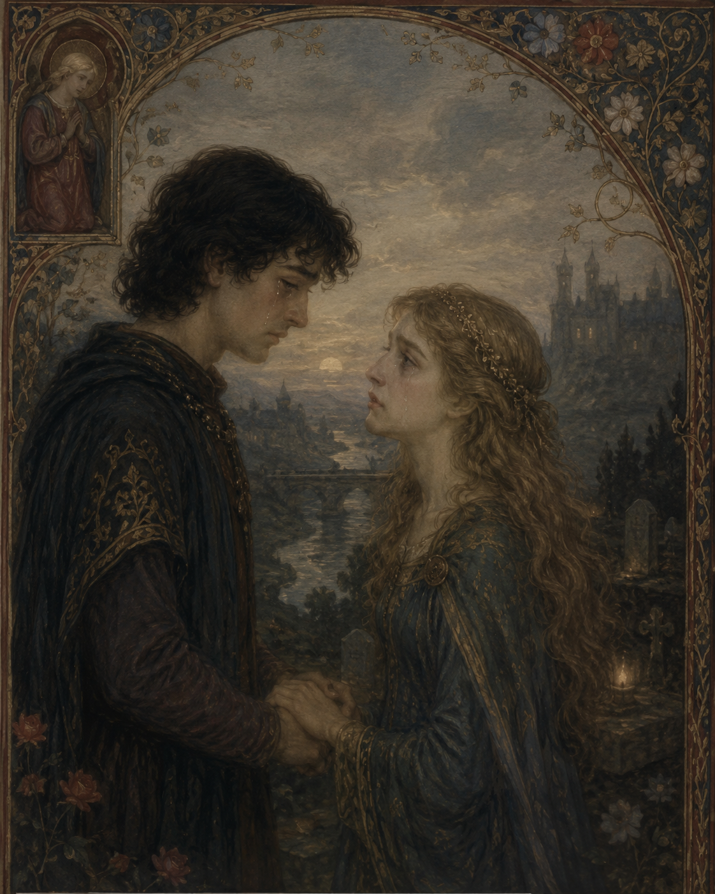

Some memories begin long before we understand their meaning. This poem follows two children whose playful innocence gradually
matures into a deep and mutual love. Though destiny eventually separates them, the tenderness of their shared past endures,
reminding us that some relationships leave an imprint on the heart even when they cannot last.
🎵 "Greensleeves / What Child is this?"
— JuliusH (Pixabay Music)

Our parents dressed him as a handsome groom,
and me as a radiant bride.
On the edge of sweet discovery,
in a tender world still learning how to bloom,
we were only three to five years old, so wide-eyed.
They took our couple photos with delight,
as if marriage already lived within their sight.
We never understood the meaning behind their smiles,
only the warmth of those innocent golden days.
Time passed. Seasons turned and changed.
Childhood shadows slowly drifted away.
We stepped into adulthood side by side,
two new souls beneath a brighter day.
Destiny drew us close with gentle art,
love igniting like a sudden flame,
a quiet magnet pulling heart to heart,
binding us beneath an unspoken name.
Though oceans stretched between us wide,
we still lived within each other’s hearts.
Meeting only once in a blue moon,
we longed for the softness of monsoon skies.
Then one day, he gathered courage true
and spoke his love, so pure and deep.
Without hesitation, I echoed the same,
releasing my heart from its silent keep.
Two minds, one single chime,
a fleeting, perfect harmony.
Who knew the ending would turn so unkind,
so heavy with sorrow, denied its way?
Circumstances shifted against our fate,
denying us a path to stay.
We parted, carrying silent pain,
with questions that time could never mend.